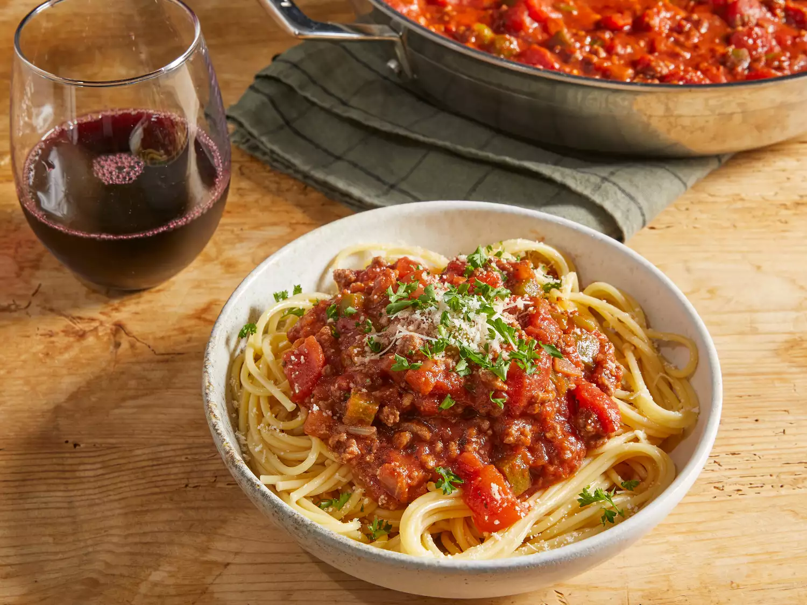

Spaghetti

How to Make Spaghetti Sauce with Ground Beef
There's nothing like classic spaghetti and meat sauce to bring people together around the dinner table. This homemade spaghetti sauce with ground beef recipe will satisfy all your comfort food cravings.
The Allrecipes community adores this spaghetti with ground beef recipe because it's incredibly customizable, so you can easily alter the ingredient list to suit your needs. If you want to stay true to the original recipe, though, these are the ingredients you'll need to add to your grocery list:
- 1/2kg ground beef
- medium onion, chopped
- 1 can of diced tomatoes
- 1 teaspoon of salt
- 1/2 teaspoon ground black pepper
- Egg: An egg helps bind the ricotta so it doesn't ooze out of the lasagna when you cut into it.
How to make spaghetti Step-By-Step
- Gather all ingredients.
- Combine ground beef, onion, garlic, and green pepper in a large saucepan over medium-high heat. Cook and stir until meat is browned and crumbly and vegetables are tender, 5 to 7 minutes. Drain grease.
- Stir diced tomatoes, tomato sauce, and tomato paste into the pan. Season with oregano, basil, salt, and pepper. Simmer spaghetti sauce for 1 hour, stirring occasionally.
- Serve hot and enjoy!
